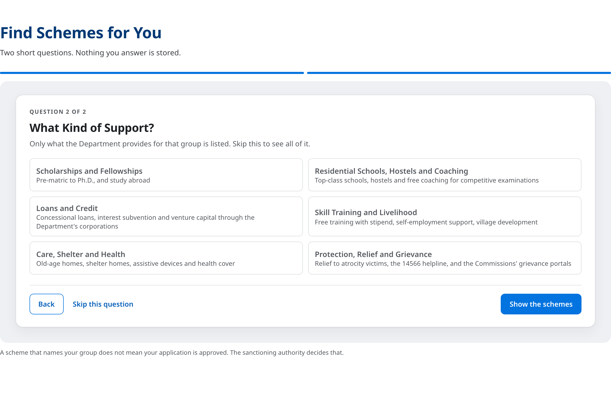
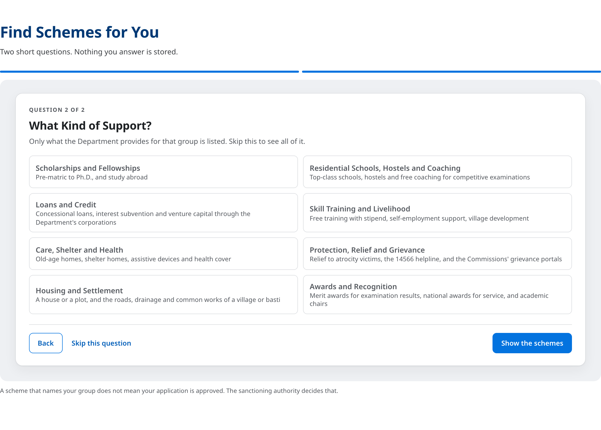

The second question, for a reader who chose Scheduled Castes
The finder lists only what the Department provides for the group chosen. Two categories were added on 11 September 2026, so the same question now offers eight answers instead of six.
Before — six
After — eight, with Housing and Settlement and Awards and Recognition